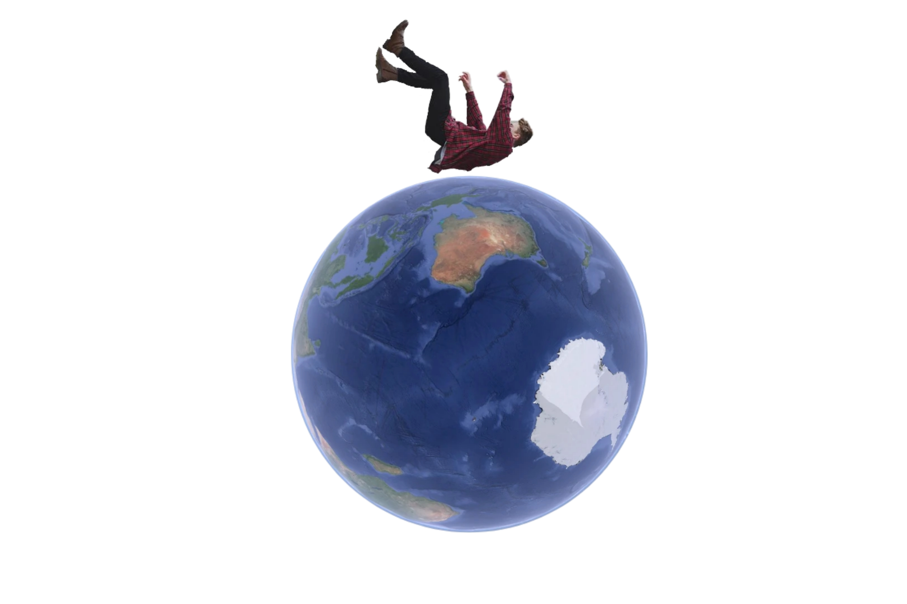

B STUDY

GRAVITY
Gravity is a fundamental force of nature that governs the interactions between objects with mass or energy. It is responsible for phenomena like the falling of objects, the orbits of planets around stars, and the structure of galaxies.
Key characteristics of gravity include:
1. Attraction: Gravity is an attractive force, meaning it pulls objects with mass towards one another. The strength of this attraction depends on the mass of the objects and the distance between them.
2. Proportional to Mass: The force of gravity is directly proportional to the mass of the objects involved. More massive objects have a stronger gravitational pull.
3. Inverse Square Law: The strength of gravity weakens with distance according to the inverse square law. This means that if you double the distance between two objects, the gravitational force between them decreases by a factor of four.
4. Universal: Gravity is a universal force that acts on all objects with mass, regardless of their size or composition. It is present everywhere in the universe.
5. Non-Discriminatory: Gravity affects all types of matter equally. Whether an object is solid, liquid, gas, or even a plasma, it experiences the force of gravity.
6. Orbital Motion: Gravity is responsible for the orbits of celestial bodies. Planets orbit around stars, moons orbit around planets, and satellites orbit around Earth due to the gravitational pull of larger bodies.
7. Acceleration Due to Gravity: On the surface of the Earth, the acceleration due to gravity is approximately 9.8 meters per second squared (9.8 m/s²). This means that every second an object falls, its speed increases by 9.8 meters per second.
8. Escape Velocity: To leave the gravitational influence of a massive body (like a planet or moon), an object needs to reach a certain speed called escape velocity. This velocity depends on the mass and size of the body..
Gravity is described by Albert Einstein's theory of general relativity, which provides a more comprehensive understanding of how mass and energy warp spacetime, creating the effect of gravity. This theory has been confirmed through numerous experiments and observations.
.
In everyday life, we often take gravity for granted, but it is one of the fundamental forces that shapes the universe as we know it. Without gravity, planets would not orbit stars, galaxies would not form, and the structure of the cosmos would be vastly different.